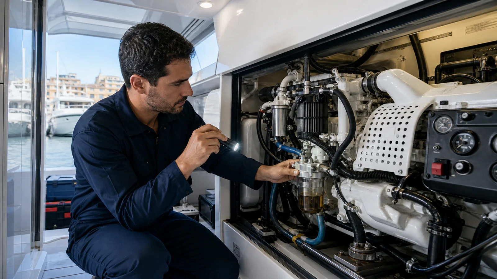

Un generador trabaja como un sistema: motor, refrigeración por agua de mar, combustible, escape, batería de arranque y parte eléctrica. Cambiar un filtro sin confirmar la alarma puede ocultar el síntoma durante minutos y dejar intacta la falla principal.
Qué revisar sin desmontar componentes
- Registra la alarma. Fotografía el código, luces, temperatura y horas antes de cortar energía.
- Confirma niveles y fugas. Con el equipo frío y según el manual, revisa aceite, refrigerante y señales visibles.
- Observa descarga de agua. Un flujo diferente puede indicar restricción o problema de impulsor.
- Revisa la toma de mar. Verifica la posición de la válvula y el estado visible del filtro sin abrir un sistema caliente.
- Anota la carga. Identifica qué equipos estaban funcionando cuando ocurrió el apagado.
Causas frecuentes de alta temperatura
Entrada de agua restringida
Una toma cerrada, bolsa, vegetación, sedimento o filtro obstruido reduce el caudal. En aguas cálidas y con crecimiento marino, la inspección del circuito de agua cruda es prioritaria.
Impulsor o bomba de agua
Las paletas pueden deteriorarse y sus fragmentos avanzar por el circuito. El manual de KOHLER advierte que operar sin suministro de agua puede dañar el impulsor y causar sobrecalentamiento grave.
Intercambiador, refrigerante y escape
Depósitos, nivel bajo, tapa, termostato, mangueras o mezcla incorrecta pueden afectar la transferencia de calor. El escape húmedo también debe evaluarse como sistema, no de forma aislada.
Por qué se apaga cuando conectas equipos
Si funciona sin carga pero falla al encender aire acondicionado, cocina o cargadores, puede existir sobrecarga, una demanda de arranque alta, combustible insuficiente o un problema en la generación eléctrica. Anota el orden y la potencia de los equipos; esa secuencia ayuda a reproducir el fallo sin suposiciones.
Datos que aceleran el diagnóstico
- Marca, modelo, potencia, combustible y horas.
- Código exacto de alarma y fotografía del panel.
- Tiempo desde el arranque hasta el apagado.
- Carga conectada y si el fallo ocurre amarrado o navegando.
- Fecha de último cambio de aceite, filtros, impulsor y refrigerante.
- Trabajos recientes en baterías, escape, toma de mar o tablero.
Preguntas frecuentes
¿Por qué se apaga solo?
La protección puede responder a temperatura, aceite, combustible, sobrecarga, sensor o falla eléctrica. El código y las pruebas determinan cuál.
¿Puedo volver a encenderlo?
Solo después de entender la alarma y siguiendo el manual. Reiniciarlo repetidamente puede convertir una restricción menor en daño costoso.
¿Se debe usar con carga?
Sí, dentro del rango y procedimiento del fabricante. Evita cargas extremas o periodos prolongados sin carga útil; registra cómo se comporta al aplicar consumos.
¿Tu generador se apaga o presenta humo?
Envíanos modelo, horas, alarma y video del comportamiento para coordinar diagnóstico en Cartagena.
Revisar generador